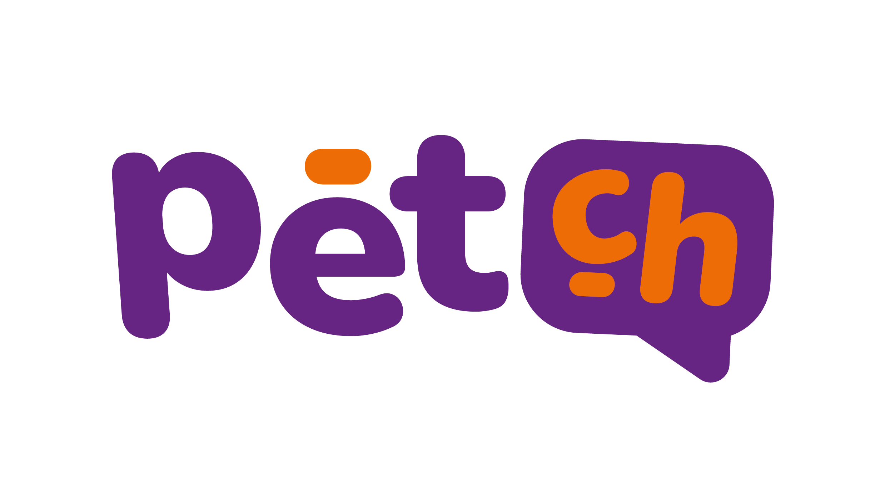

Una lectura para BDAC Tech Labs antes de cruzar a México o Colombia. Qué pieza del producto necesita IA de verdad, qué pieza necesita reglas, y qué pieza solo necesita código sólido.
Ustedes acaban de lanzar Mauito dentro de una app que ya hace siete cosas distintas: historial médico, clínicas, emergencias, mascotas perdidas, entrenamiento, tienda con delivery. La versión 1.8.7 salió en febrero. Ahora viene eMerge, y con eMerge viene la conversación de expandir fuera de Venezuela.
Ese es el momento en que vale la pena preguntarse qué pieza del producto necesita IA de verdad, qué pieza necesita reglas, y qué pieza solo necesita código sólido.
Nuestra lectura es más simple. Hacer esta separación explícita antes de entrar a un segundo país ahorra meses de rebuilds.
Perfiles, citas, historial. No necesita IA.
Emergencias, rutas, notificaciones. Determinista y auditable.
Casi todo vive dentro de Mauito. Y ahí es donde hay que invertir.
Sprint enfocado con workshop, calls de asesoría, y entregables concretos.
Organizational Context Architecture y un Strategic Operations Framework para el equipo.
Qué construir ellos mismos, qué comprar, y qué dejar quieto. El mismo formato aplica a Petch.
Publicamos el método detrás de esto en ACM TiiS como Interpretable Context Methodology. Código abierto en GitHub. Es útil para cualquier equipo que esté construyendo un asistente con memoria y necesite entender por qué a veces funciona y a veces no. Aplica directo a Mauito: L0 identidad, L1 enrutamiento, L2 protocolos veterinarios, L3 referencias de medicamentos y entrenamiento, L4 historial por mascota.
Jake Van Clief, fundador de Eduba, también construyó una comunidad online que creció a 22,000 miembros en cinco semanas. 1,500+ personas entrenadas en engagements empresariales desde mayo de 2025, incluyendo Pacific Life, Colgate-Palmolive, y KPMG UK (una de las Big Four). Eduba trabaja junto con NLP Logix para lo que vive debajo de la capa de orquestación. NLP Logix lleva en machine learning desde 2011 y opera con más de 150 data scientists.
30 minutos con Matt para hablar del mapa de Mauito y del siguiente país. Traigan la consulta más rara que Mauito haya recibido esta semana.
O escribir a thecro@eduba.io